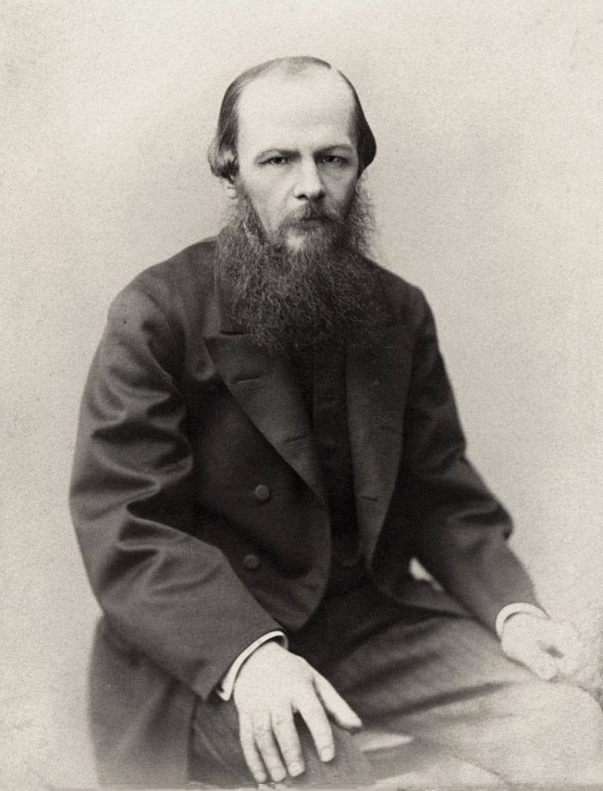

Богочеловечество — понятие русской религиозной философии, восходящее к христианскому учению о единстве «неслитном, неизменном, нераздельном, непреложном» божественной и человеческой природы Иисуса Христа.
Соборность — понятие в русской религиозной философии, означающее свободное духовное единение людей как в церковной жизни, так и в мирской общности, общение в братстве и любви.
Всеединство — внутреннее органическое единство бытия как универсума.
Особая миссия России видится ему в том, чтобы служить примером идеальных духовных ценностей всему человечеству. Последняя истина, по мнению Достоевского, заключена в Божьем слове, высказать которое Бог доверил православной церкви.
